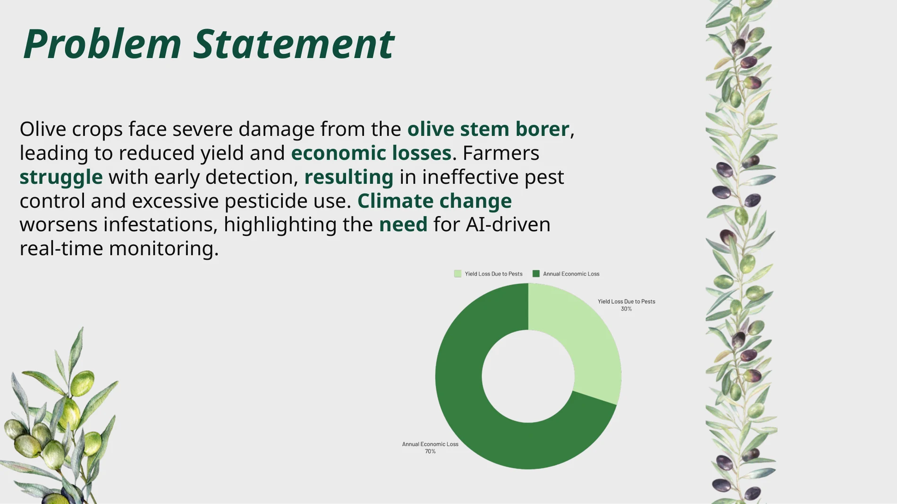
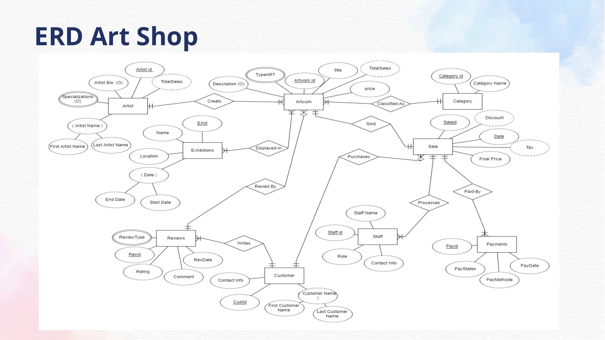
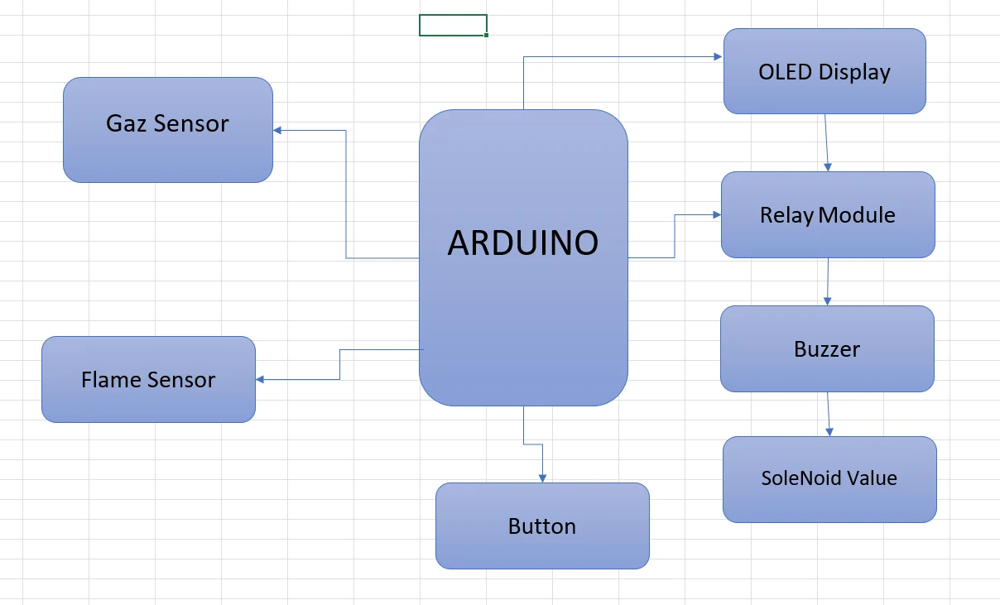

01 / 072026

Product strategy · System analysis
NOURISH ↗
Healthy-food commerce with an interactive bowl builder, creator recipes and subscriptions.
1 source fileExplore study →
From real full-stack implementation to product blueprints, UML models and business cases — each archive is organized by project, not scattered by file name.
Choose a project and open its dedicated visual case study. The same project can have diagrams, a dossier, a pitch and model exports together.
Healthy-food commerce with an interactive bowl builder, creator recipes and subscriptions.
A Jordan-focused marketplace connecting customers with shopping mediators.

Smart city incident reporting platform with location data, sector workflows and AI-assisted reporting.

AI/IoT concept for detecting pests in olive trees and supporting sustainable farming.

Relational data model and SQL design for an artwork marketplace and gallery operations.

Safety concept that monitors stove flame/gas and proposes automatic shutoff and alarms.

Use-case, activity and interaction diagrams for a job-search/application workflow.
Esc to close · Original document images shown at readable size